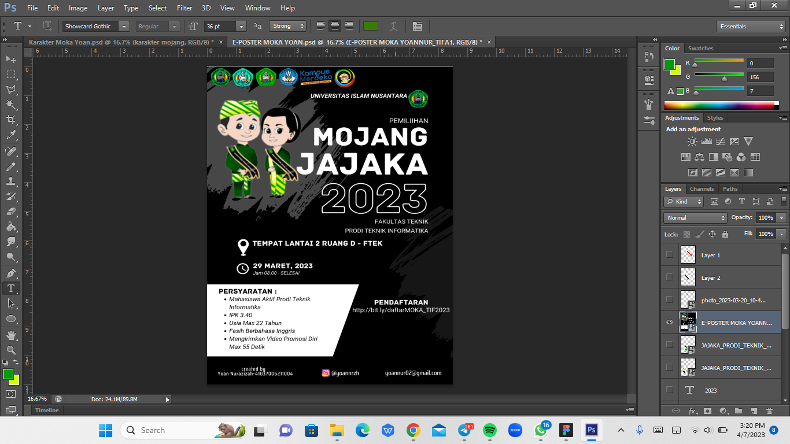
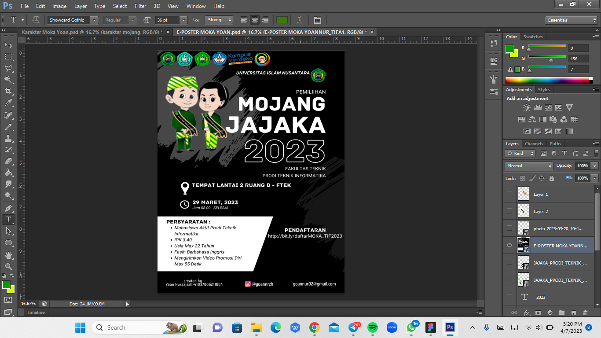
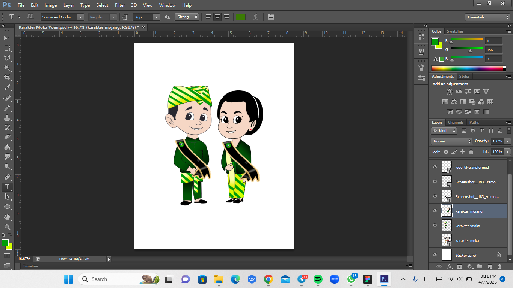
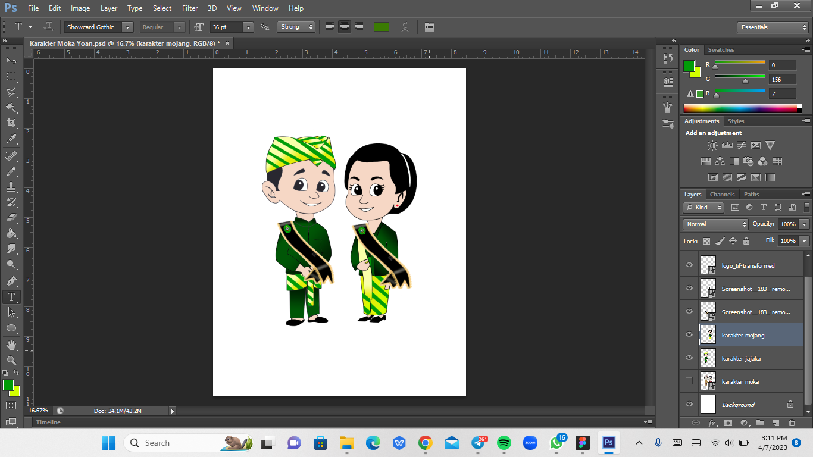

Hi Im Yoan Nurazizah
Yoannrzh
Saya adalah seorang di bidang Desain Grafis, lahir di Bandung. Saya lulusan di SMKN 14 BANDUNG dengan Jurusan Animasi. Saya telah memiliki pengalaman kerja praktik selama 3 bulan di bidang Desain Grafis. Saat ini saya sedang menempuh pendidikan di Universitas Islam Nusantara. Fakultas Teknik Prodi Teknik Informatika.
Biografi
What I do
Desain grafis melibatkan unsur-unsur kreativitas, inovasi, estetika, dan keharmonisan dalam penyusunan elemen visual.


Photoshop
Picsart


Canva
Filmora


Medibang Paint
Ibis PaintX
Featured Project
Skill
Cuplikan Desain Grafis
 



Yoannrzh
Docs
Book Notes
Polywork
Starter Template
Statistics
Reach me out


Yoannrzh
Cuplikan Desain Grafis
 

Docs
Book Notes
Polywork
Starter Template
Statistics
Reach me out

Yoannrzh
yoannrzh